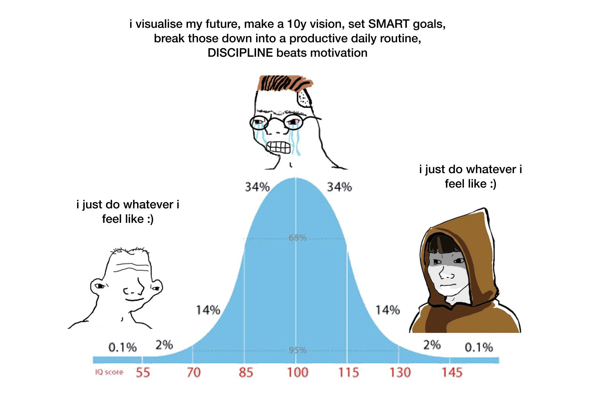

You are about to read some wildly unconventional opinions here, you have my full permission to disregard any of it.

Photo by Muhammad Daudy on Unsplash
I’m mostly indifferent about a lot of things save for a few that I actually care about. The few opinions I have are considered by many to be unconventional. Take running for instance, I believe in something I call equilibrium mileage, the sweetspot that balances progression, recovery and life; it varies from person to person. I think training by feel can be just as effective as following a plan, In my opinion many athletic products are superflous, infact I have yet to buy my first running gel. Don’t get me wrong, I have strong convictions here. The reason you shouldn’t take my word is because there is a good chance it won’t apply to you. Acknowledge it with the possibility that you may or may not agree with me. My confidence comes from the fact that I’ve worked my way to the right side of the bellcurve; the side that houses many unpopular opinions and advice. Speaking of bellcurves …

The meme is funny because its true. Beginners and experts often think alike. After spending some time in the middle, some eventually move to the right side of the curve where the same opinions are branded ‘unconventional’. This is to be expected since the majority (hence popular by definition) live in the middle. Many names come to mind when I think of outliers: Courtney Dauwalter: the ultra-running champion who trains on vibes, Tim Ferris: the millionaire who works 4 hours a week, Warren Buffet: the billionaire who indulges in diet coke and junk food, Morgan Housel: the author who is a little underemployed. Their approaches are actually intuitive, we find them radical because ignoring popular advice actually works (for them).
Photo by Ricardo Gomez Angel on Unsplash
So the question remains; can we (and should we) skip the middle? Simply ignore popularized wisdom and do your own thing. I don’t think that’s a good idea. Serving time in the middle is essential; there is value in learning, experimenting and failing. You won’t know what works without trying; likewise it is important to learn what doesn’t work, ideally through experience. It’s one thing to know theoretically that running a marathon undertrained is a bad idea, its another to attempt it and fail to finish or get injured. One of these will produce better appreciation for training. The bellcurve hump is about figuring out what works for you; what you come up will likely be unique to you, hence unconventional.
I think many of us are eager to fast forward to the right side. We load up on self-help books, listen to podcasts and watch influencers in search of the magical answer to the question: ‘How to live’. Second hand lessons that is lessons from other people, can be valuable but ultimately there is no substitute to actually living. Warren Buffet didn’t read his own books when he was building his empire, he was simply doing the work. This realization made me change how I consume content. Instead of looking for prescriptions, I’m more interested in how they came up with them. If their reality, mental or physical, doesn’t resemble anything like mine, am likely not the target audience so I move on. I hope you do the same. I don’t mind if you disregard anything I claim but I do hope that live.